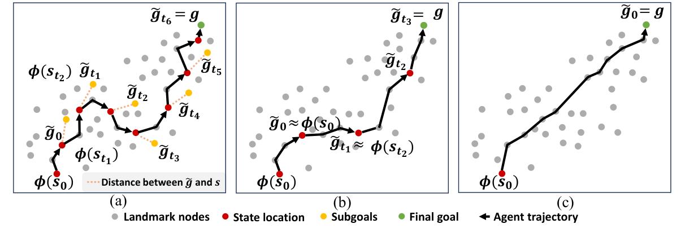
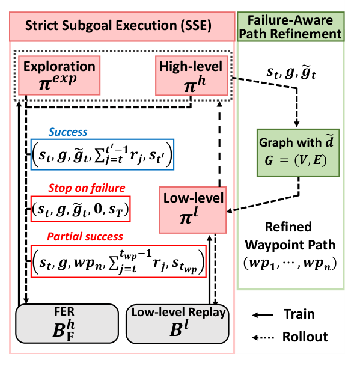
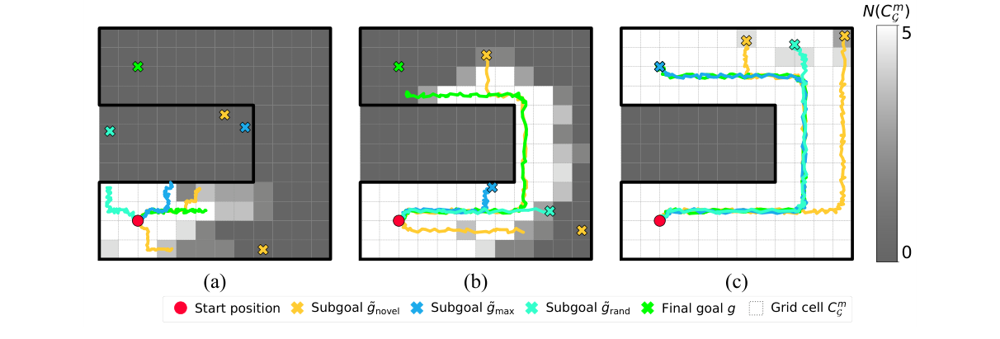
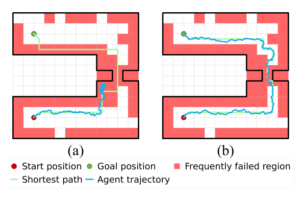
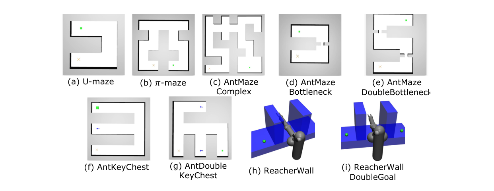
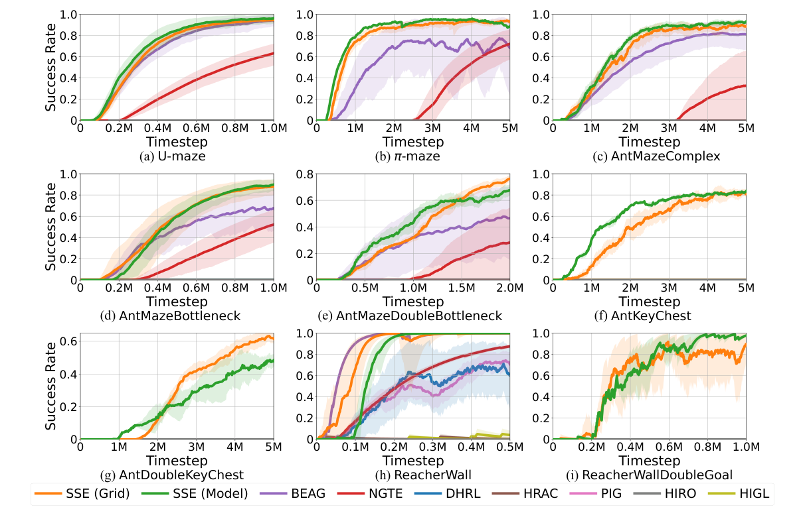
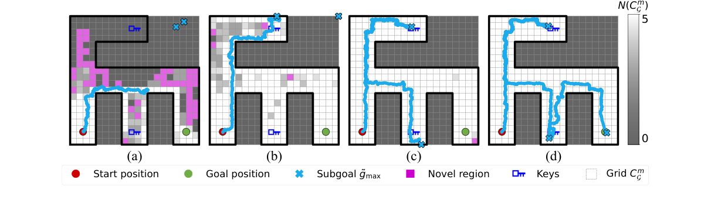
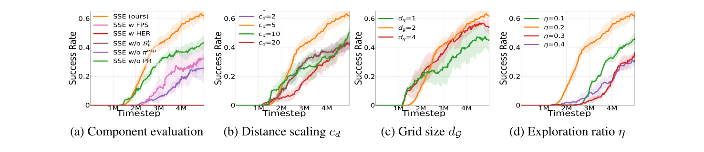

Reliable Long-Horizon Planning in Hierarchical Reinforcement Learning
Long-horizon goal-conditioned tasks pose fundamental challenges for reinforcement learning (RL), particularly when goals are distant and rewards are sparse. While hierarchical and graph-based methods offer partial solutions, their reliance on conventional hindsight relabeling often fails to correct subgoal infeasibility, leading to inefficient high-level planning. To address this, we propose Strict Subgoal Execution (SSE), a graph-based hierarchical RL framework that integrates Frontier Experience Replay (FER) to separate unreachable from admissible subgoals and streamline high-level decision making. FER delineates the reachability frontier using failure and partial-success transitions, which identifies unreliable subgoals, increases subgoal reliability, and reduces unnecessary high-level decisions. Additionally, SSE employs a decoupled exploration policy to cover under-explored regions of the goal space and a path refinement that adjusts edge costs using observed low-level failures. Experimental results across diverse long-horizon benchmarks show that SSE consistently outperforms existing goal-conditioned and hierarchical RL methods in both efficiency and success rate.
Graph-based HRL methods usually apply hindsight relabeling (HER) at both levels. At the low level this is helpful, but at the high level it creates a problem: when the chosen subgoal is unreachable (limited skill, an obstacle, or excessive distance), every state visited on the failed trajectory is treated as if it had been the intended subgoal. The high-level policy therefore keeps selecting ineffective subgoals, the same subgoal produces widely varying transitions, and high-level trajectories become long. Even when the final goal is reached, credit is spread over too many decisions for earlier choices to be reinforced.

The high level is rewarded only for subgoals that are actually reached. Failure and partial-success transitions mark where execution breaks down and how far it got, separating reachable from unreachable subgoals.
Strict execution makes the agent avoid regions where it has failed. A separate exploration policy targets under-visited regions of the goal space to keep coverage high.
Graph edge costs are increased toward nodes where the low-level policy often fails, so Dijkstra planning prefers safer detours while still passing through unavoidable bottlenecks.

Every high-level step, a subgoal \(\tilde g_t\) is chosen and the low-level policy follows a waypoint path on the graph until it terminates at time \(t'\). The subgoal counts as reached if \(\|\phi(s_{t'}) - \tilde g_t\| < \lambda\). FER stores the outcome as one of three transition types:
Together these transitions trace the reachability frontier — the boundary between subgoals the low-level policy can and cannot reach — and give the high-level critic consistent targets. Unlike HER, FER never turns a failed attempt into a synthetic success.
Ending the episode on failure makes the agent conservative. To counter this, the high-level controller is split into two policies:
Exploration dominates early in training and is gradually mixed with \(\pi^h\) at ratio \(\eta : (1-\eta)\).

Because every subgoal must be reached within a single high-level step, the waypoint path has to be reliable. The standard edge cost ignores collisions and getting stuck, so the shortest path often runs right along walls where the agent fails.
SSE multiplies the cost of each edge \(v_1 \to v_2\) by \(\max(1,\, c_d \cdot \rho_f(v_2))\), where \(\rho_f(v_2)\) is the failure ratio of the target node — measured per grid cell in SSE (Grid), or predicted by a learned failure classifier in SSE (Model). Refinement is switched on only after enough successful visits, so the low-level policy is competent first.

We evaluate on 9 long-horizon tasks with fixed goals: 5 AntMaze layouts ranging from a simple U-maze to maps with narrow corridors, 2 KeyChest tasks in which the Ant must collect one or two keys before reaching the goal (the keys are not given as goals), and 2 Reacher tasks in which a 3D arm must get around walls to reach one or two goals. The KeyChest and DoubleGoal tasks require intermediate objectives, which makes them a direct test of high-level planning.

We compare against conventional HRL (HIRO, HRAC), graph-based HRL (HIGL, DHRL, NGTE), and graph-based methods without an explicit high-level policy (PIG, BEAG). Baselines use the authors' implementations. Both SSE variants match or exceed the best baseline on every task, and they are the only methods that solve AntKeyChest, AntDoubleKeyChest, and ReacherWallDoubleGoal. In simple mazes, strong baselines such as BEAG and NGTE also learn, but SSE converges faster. In bottleneck maps, path refinement lets SSE avoid unstable regions. On KeyChest and ReacherWallDoubleGoal, which need intermediate objectives, most baselines fail entirely: conventional HRL suffers from long high-level horizons, and goal-centric methods such as BEAG cannot reason about intermediate targets.

In AntDoubleKeyChest the agent first expands its coverage, then learns to reach the first key in one high-level step, both keys in two, and finally the whole task — two keys and the goal — in three. No curriculum is used: the reliable high-level policy learned through FER, together with key-possession flags in the state, is enough for the agent to discover the order of sub-objectives on its own.

Removing any component lowers performance on AntDoubleKeyChest. Replacing strict subgoal execution with a HER-based high level, or replacing FER with a standard replay buffer, prevents learning entirely — the clearest evidence that strict execution is the core of the method. Replacing grid landmarks with farthest point sampling still solves the task, only less efficiently, so the framework does not depend on a particular landmark scheme. Performance is stable across a wide range of the path-refinement scale, grid size, and exploration ratio.

Ending the episode as soon as a subgoal fails removes long, unproductive rollouts, so SSE is also cheaper per episode than the baselines that can solve these tasks at all. The gap is largest on long-horizon tasks.
| Task | Metric | SSE | BEAG | NGTE |
|---|---|---|---|---|
| AntMazeBottleneck | Time per episode | 5.94 s | 6.46 s | 12.65 s |
| Episodes to 60% success | 432 | 425.2 | 725.6 | |
| AntKeyChest | Time per episode | 18.13 s | 57.29 s | 119.07 s |
| Episodes to 60% success | 1658 | fail | fail |
BEAG and NGTE are the only baselines that succeed in at least one fixed-goal setting.
@inproceedings{hwang2026sse,
title={Strict Subgoal Execution: Reliable Long-Horizon Planning in Hierarchical Reinforcement Learning},
author={Hwang, Jaebak and Lee, Sanghyeon and Kim, Jeongmo and Han, Seungyul},
booktitle={The Fourteenth International Conference on Learning Representations},
year={2026},
url={https://openreview.net/forum?id=cMpOvMuyYa}
}